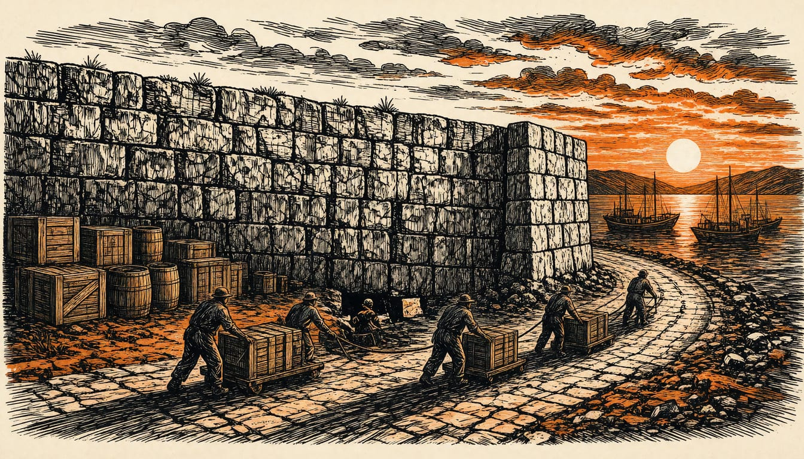

EU sanctions cut Russia trade to 58 billion euros but enforcement lags
Trade fell from 253 billion euros in 2021. The European Court of Auditors says unclear rules and uneven application let firms bypass the bans, and Russia now trades more with India and China.

EU trade sanctions against Russia have cut direct trade from 253 billion euros in 2021 to 58 billion in 2025. But they are falling short of their full potential, the European Court of Auditors said in a report on 10 November 2026. Unclear rules and weaknesses in enforcement, the auditors said, dampen the impact and make the sanctions easier to bypass.
Forum-shopping, they found, dampens the sanctions' effect.
The EU has passed 21 sanctions packages since Russia's full-scale invasion of Ukraine began in February 2022. The auditors found the bans largely worked for the goods the Russian armed forces most need, but that evasion remains a problem. The Court of Auditors judges that notable coordination efforts have been made since the invasion. Even so, it said, implementation remains uneven.
The auditors called the sanctions the most far-reaching restrictive measures the EU has ever agreed to. That includes the steps meant to stop firms dodging them. Mihails Kozlovs, who wrote the report for the Court of Auditors, set one condition for success. The sanctions will deliver their intended impact, he said, if all member states apply them in a uniform and coordinated way.
The European Court of Auditors report also asks for better information sharing between member states and stronger monitoring of how the bans are applied. One question stays open: what Russia does instead of European trade. The auditors found that despite the sanctions, Russia makes up its lost European trade through deals with India and China.